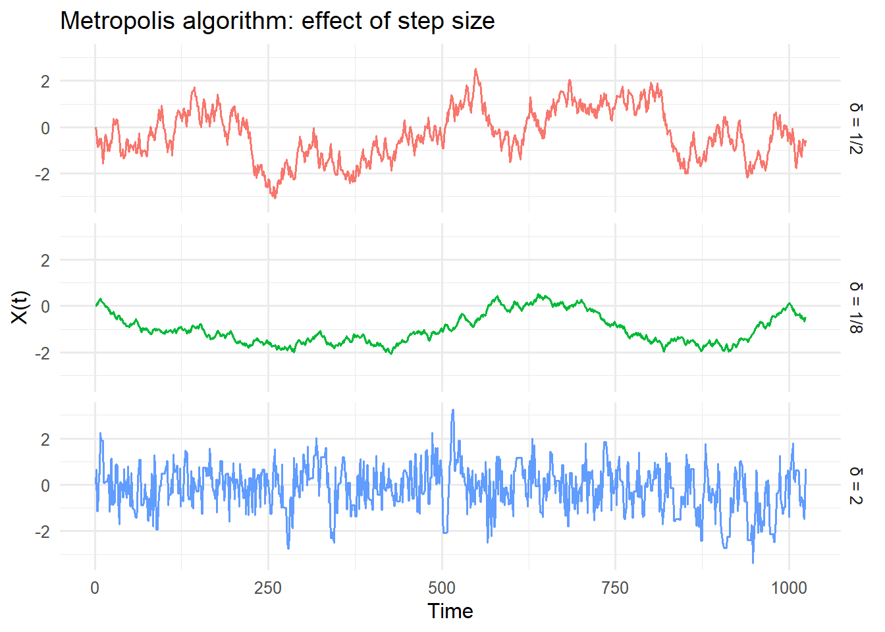
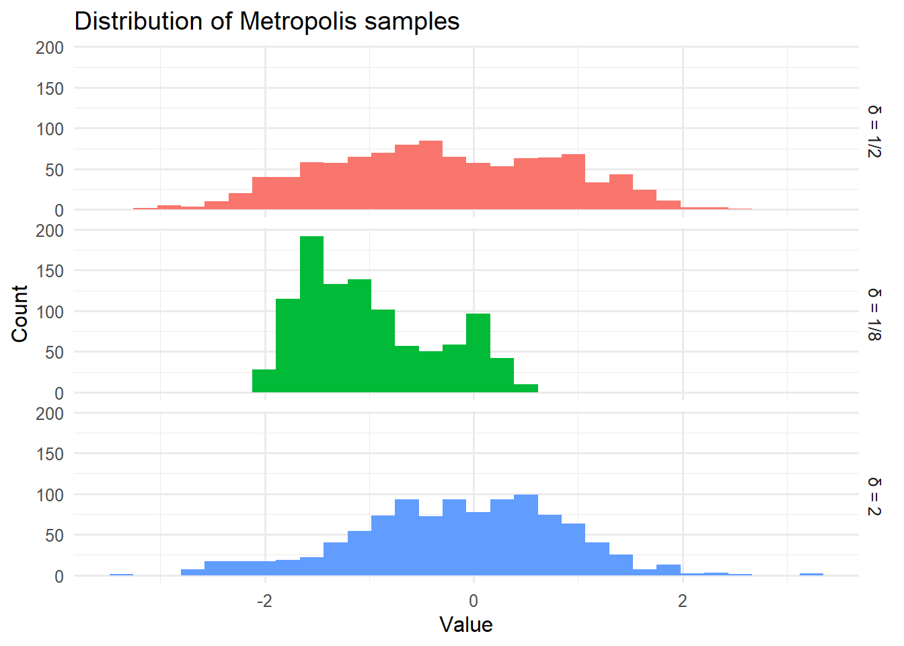

Show the code
library(astsa)
library(tidyverse)library(astsa)
library(tidyverse)This appendix provides a detailed treatment of Markov Chain Monte Carlo (MCMC) methods, which are fundamental to Bayesian statistics and probabilistic machine learning. The material assumes familiarity with basic probability theory and Markov chains.1
Markov Chain Monte Carlo (MCMC) simulation encompasses many variations. The basic problem to be addressed is similar to that of importance sampling:
We would like to generate a random sample from a distribution having given density, \(p(x), x \in \mathbb{R}^d\).
We cannot directly generate the desired random sample, although we can evaluate \(p(x)\) for any given \(x \in \mathbb{R}^d\).
The approach toward a solution can be framed as follows:
Construct a Markov chain \(X: \mathbb{Z} \rightarrow \mathbb{R}^d\) (a discrete-time random process) having a stationary distribution (to which \(X(\cdot)\) converges) given by density \(p(\cdot)\).
Generate a sufficient number \(n\) of samples from \(X(\cdot)\) so that \(\{ X(n), X(n+1), \ldots \}\) approximates a sample from the desired stationary distribution.
Recall the definition of a Markov chain, \(X(\cdot)\). The conditional distribution of \(X(t)\) given past values, \(X(t-1), X(t-2), \ldots\), is just the conditional distribution of \(X(t)\) given its preceding value, \(X(t-1)\).
To illustrate, suppose that the values of \(X(\cdot)\) are restricted to a finite set, say \(\{ 1, 2, 3 \}\). Then we define the transition probability \(p_{a, b}\) as the following conditional probability.
\[ \begin{align} p_{a, b} &= P(X(t) = b \; | \; X(t-1) = a) \end{align} \qquad(16.1)\]
These transition probabilities are the elements of the following transition probability matrix \(T\).
\[ \begin{align} T &= \left ( \begin{matrix} p_{1, 1} & p_{1,2} & p_{1,3} \\ p_{2, 1} & p_{2,2} & p_{2,3} \\ p_{3, 1} & p_{3,2} & p_{3,3} \end{matrix} \right ) \end{align} \qquad(16.2)\]
If we denote the (marginal) probability distribution of \(X(n)\) as \(\pi_n\):
\[ \begin{align} \pi_n &= \left ( P(X(n) = 1), P(X(n) = 2), P(X(n) = 3) \right ) \end{align} \qquad(16.3)\]
then we have:
\[ \begin{align} \pi_{n+1} &= \pi_n \; T \end{align} \qquad(16.4)\]
Consequently we have:
\[ \begin{align} \pi_n &= \pi_0 \; T^n \end{align} \qquad(16.5)\]
Under regularity conditions2 there is a unique stationary distribution, say \(\pi_\infty\), such that \(\pi_n \rightarrow \pi_\infty\). Convergence is accompanied by diminishing values of \(\lVert \pi_{n+1} - \pi_n \rVert\).
Recall that \(p(x)\) is the prescribed stationary distribution of a Markov chain \(X(\cdot)\) that we must construct. To do so, we will use the fact that if \(X(\cdot)\) is time-reversible, then the marginal distribution of \(X(\nu)\) is stationary. This can be seen as follows.
\(X(\cdot)\) is time-reversible if the following holds. For any given \(n > 0\) define \(Y(\nu) = X(n - \nu)\) for \(0 \le \nu \le n\). Then the joint probability distribution of the sequence \(( X(0), \ldots, X(n) )\) is equal to that of the sequence \(( Y(0), \ldots, Y(n) ) = ( X(n), \ldots, X(0) )\).
It follows that the ordered pair of random variables \((X(0), X(n))\) has the same distribution as that of \((X(n), X(0))\), so that \(X(0)\) has the same distribution as \(X(n)\), and this holds for all \(n > 0\). Thus if \(X(\cdot)\) is time-reversible its marginal distribution must be stationary.
Now assume for the moment that the values of \(X(t)\) form a discrete set, so that:
\[ \begin{align} P\left ( X(0) = a, X(1) = b \right ) &= \pi_\infty(a) \times p_{a, b} \\ P\left ( X(1) = a, X(0) = b \right ) &= \pi_\infty(b) \times p_{b, a} \end{align} \qquad(16.6)\]
If \(X(\cdot)\) is time-reversible, it follows that:
\[ \begin{align} \pi_\infty(a) \times p_{a, b} &= \pi_\infty(b) \times p_{b, a} \end{align} \qquad(16.7)\]
Equations of this form are called detailed balance equations (or local balance equations). If they hold then marginal distribution \(\pi_\infty\) along with transition probabilities \(p_{a, b}\) define a stationary Markov chain.
Suppose now that \(q(Y \; | \; X )\) is a transition density from which we can generate a random sequence \(X(0), X(1), \ldots\), and let \(p(x)\) denote the prescribed stationary distribution of \(X(\cdot)\). Also suppose that the current state of the generated sequence is \(X(t) = x\).
The Metropolis-Hastings procedure is an iterative algorithm for generating the next value of the sequence as follows.
\[ \begin{align} \alpha(y \; | \; x) &= \min \left \{1, \frac{ p(y) \; q(x \; | \; y) }{ p(x) \; q(y \; | \; x ) } \right \} \end{align} \qquad(16.8)\]
The original algorithm, known as the Metropolis algorithm, is a simpler procedure that generates a random walk. Let \(g(\cdot)\) denote a probability density function that is symmetric with respect to \(x = 0\). Given the current state \(X(t) = x\), generate the candidate value \(y\) as:
\[ \begin{align} y &= x + \epsilon \\ \\ &\text{where } \\ \\ \epsilon &\sim g(\cdot) \end{align} \qquad(16.9)\]
Then the density \(q(y \; | \; x)\) of the transition from \(x\) to \(y = x + \epsilon\) is:
\[ \begin{align} q(y \; | \; x) &= g(y - x) \end{align} \qquad(16.10)\]
Since \(g(\cdot)\) is symmetric about zero, \(q(y \; | \; x )\) is symmetric in its two arguments.
\[ \begin{align} q(x \; | \; y) &= g(x - y) \\ &= g(y - x) \\ &= q(y \; | \; x) \end{align} \qquad(16.11)\]
Consequently the acceptance ratio simplifies as follows.
\[ \begin{align} \alpha(y \; | \; x) &= \min \left \{1, \frac{ p(y) \; q(x \; | \; y) }{ p(x) \; q(y \; | \; x ) } \right \} \\ &= \min \left \{1, \frac{ p(y) }{ p(x) } \right \} \end{align} \qquad(16.12)\]
For some fixed \(\delta > 0\) let \(g(\cdot)\) be the uniform density on the interval \((-\delta, \delta)\). Let the specified stationary distribution be given by the standard normal density function \(\phi(\cdot)\). Then the Metropolis algorithm outlined above will generate a random walk in discrete time having jump-magnitudes governed by \(\delta\).
The steps to generate the next value \(y\) given the current value \(x\) are a simplification of the steps previously outlined.
\[ \begin{align} \alpha(y \; | \; x) &= \min \left \{1, \frac{ \phi(y) }{ \phi(x) } \right \} \end{align} \qquad(16.13)\]
Here is R code implementing the Metropolis algorithm for sampling from a standard normal distribution:
# Acceptance log-ratio for standard normal density
alpha_nrm_ln <- function(
y, # <dbl> candidate for next value
x # <dbl> current value
) {
min(dnorm(y, log = TRUE) - dnorm(x, log = TRUE), 0)
}# Generate samples from standard normal via Metropolis algorithm
gen_nrw <- function(
delta = 0.25, # <dbl> max jump-size
n_pts = 1024L, # <int> sequence length
x_0 = 0 # <dbl> starting value
) {
x <- vector(mode = "numeric", length = n_pts)
x[[1]] <- x_0
eps <- runif(n_pts, -delta, delta)
u_ln <- runif(n_pts) |> log()
for (k in 2:n_pts) {
y <- x[[k - 1L]] + eps[[k]]
if (u_ln[[k]] <= alpha_nrm_ln(y, x[[k - 1L]])) {
x[[k]] <- y
} else {
x[[k]] <- x[[k - 1L]]
}
}
return(x)
}Here are three simulations, each starting at \(X(0) = 0\), but with \(\delta \in \{ \frac{1}{8}, \frac{1}{2}, 2 \}\), respectively. Recall that \(| X(t+1) - X(t) | \le \delta\). Thus the trajectories are decreasingly smooth.
set.seed(97)
# Try several values of delta
d_vec <- c(1, 4, 16) / 8
nrm_rw_wide <- tibble::tibble(
x_1 = gen_nrw(delta = d_vec[[1]]),
x_2 = gen_nrw(delta = d_vec[[2]]),
x_3 = gen_nrw(delta = d_vec[[3]]),
t_idx = 1:length(x_1)
) |>
dplyr::select(t_idx, x_1:x_3)
nrm_rw_long <- nrm_rw_wide |>
tidyr::pivot_longer(
cols = x_1:x_3,
names_to = "d_idx",
names_prefix = "x_",
values_to = "z"
) |>
dplyr::mutate(
delta_label = dplyr::case_when(
d_idx == "1" ~ "δ = 1/8",
d_idx == "2" ~ "δ = 1/2",
d_idx == "3" ~ "δ = 2"
)
)nrm_rw_long |>
dplyr::rename(time = t_idx) |>
ggplot2::ggplot(mapping = ggplot2::aes(
x = time, y = z, color = delta_label
)) +
ggplot2::geom_line(show.legend = FALSE) +
ggplot2::facet_grid(
rows = ggplot2::vars(delta_label)
) +
ggplot2::labs(
title = "Metropolis algorithm: effect of step size",
x = "Time",
y = "X(t)"
) +
ggplot2::theme_minimal(base_size = 12)
Next we see histograms of the generated values. For the first and smoothest series more time would have been needed to traverse a greater portion of the normal distribution values.
nrm_rw_long |>
ggplot2::ggplot(mapping = ggplot2::aes(x = z, fill = delta_label)) +
ggplot2::geom_histogram(bins = 30, show.legend = FALSE) +
ggplot2::facet_grid(rows = ggplot2::vars(delta_label)) +
ggplot2::labs(
title = "Distribution of Metropolis samples",
x = "Value",
y = "Count"
) +
ggplot2::theme_minimal(base_size = 12)
Because MCMC samples are correlated (each sample depends on the previous one), the effective amount of information is less than the nominal sample size. The effective sample size (ESS) quantifies this.
nrm_rw_smy <- nrm_rw_long |>
dplyr::group_by(delta_label) |>
dplyr::summarise(
min = min(z),
q_1 = stats::quantile(z, probs = 0.25),
mean = mean(z),
q_3 = stats::quantile(z, probs = 0.75),
max = max(z),
sd = sd(z),
n = n(),
ESS = round(astsa::ESS(z))
)
nrm_rw_smy |>
knitr::kable(digits = 2, col.names = c("Step size", "Min", "Q1", "Mean", "Q3", "Max", "SD", "n", "ESS"))| Step size | Min | Q1 | Mean | Q3 | Max | SD | n | ESS |
|---|---|---|---|---|---|---|---|---|
| δ = 1/2 | -3.06 | -1.12 | -0.30 | 0.60 | 2.53 | 1.10 | 1024 | 16 |
| δ = 1/8 | -2.07 | -1.54 | -1.00 | -0.50 | 0.52 | 0.65 | 1024 | 4 |
| δ = 2 | -3.37 | -0.77 | -0.15 | 0.56 | 3.23 | 0.98 | 1024 | 212 |
Comparing the sets of summary statistics above, we see that the first random walk (\(\delta = 1/8\)) was confined to a narrower range of values and has a much lower effective sample size. The final column is the effective sample size estimated by astsa::ESS().
The choice of \(\delta\) involves a trade-off:
A common rule of thumb is to tune the step size to achieve an acceptance rate between 20% and 50%.
When using MCMC in practice, several diagnostics help assess convergence:
Trace plots: Visual inspection of the chain’s trajectory over time. Look for stationarity (no trends) and good mixing (rapid exploration).
Autocorrelation: High autocorrelation indicates slow mixing. The ESS quantifies the effective number of independent samples.
Multiple chains: Run several chains from different starting points. They should converge to the same distribution.
Burn-in: Discard early samples before the chain has reached equilibrium.
MCMC methods are fundamental to:
Modern variants include Hamiltonian Monte Carlo (HMC) and the No-U-Turn Sampler (NUTS), which use gradient information to make more efficient proposals.
Advanced Statistical Computing by Roger Peng (Chapter 7)
Metropolis-Hastings algorithm - Wikipedia
Stan - Modern probabilistic programming with HMC/NUTS
See Peng (2025, chap. 7) for additional background.↩︎
A unique, stationary distribution exists if the chain is aperiodic, and if all states communicate and are positive recurrent. For further details see the Wikipedia article.↩︎